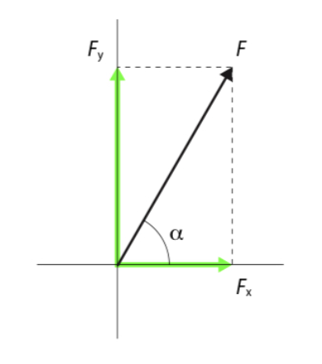
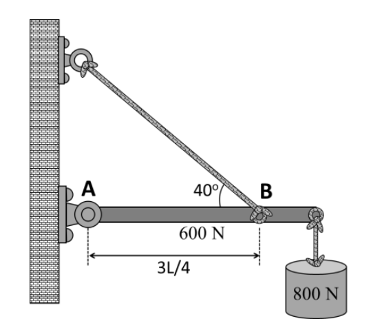
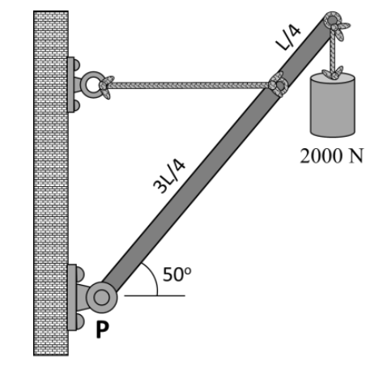
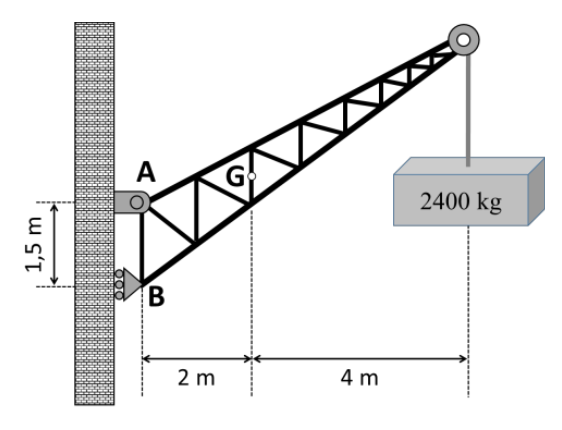

El análisis estructural es un proceso importante en ingeniería. Las estructuras deben conseguir que las construcciones se sostengan y perduren en el tiempo, es decir, que tengan estabilidad y resistencia.
En el diseño de las estructuras es necesario realizar cálculos para garantizar esa estabilidad y resistencia, que podemos simplificar así:
- Cálculo de la dimensión de la estructura para que cumpla su función, analizando las fuerzas que van a actuar sobre ella.
- Cálculo de la estabilidad estructura, de forma que no se sobrepasen ciertos esfuerzos máximos en sus elementos.
Antes de calcular directamente esfuerzos producidos en elementos resistentes, comenzaremos familiarizándonos con algunos conceptos físicos y cálculos sencillos que son de aplicación directa en las estructuras.
3.1 Centro de gravedad
El concepto del centro de gravedad es fundamental en el diseño de estructuras, en la física, en la ingeniería, y en muchas otras disciplinas que dependen del equilibrio y la estabilidad de los cuerpos.
El centro de gravedad de un cuerpo es el punto en el cual se puede considerar que está concentrado todo su peso o masa, en términos de cómo la gravedad actúa sobre él. En otras palabras, es el punto en el que las fuerzas de gravedad que actúan sobre cada una de las partículas que componen el cuerpo se equilibran y suman, permitiendo que el objeto se comporte como si todo su peso estuviera concentrado en ese lugar.
Características del centro de gravedad:
- Equilibrio: si un cuerpo se sostiene en su centro de gravedad, este se mantendrá en equilibrio sin inclinarse hacia ningún lado.
- Distribución de masa: la ubicación del centro de gravedad depende de cómo esté distribuida la masa del objeto. En objetos homogéneos (con distribución uniforme de masa), el centro de gravedad suele coincidir con el centro geométrico del objeto.
- Posición del centro de gravedad: El centro de gravedad no siempre está dentro del objeto; puede encontrarse fuera del cuerpo, dependiendo de la forma y distribución de su masa. Por ejemplo, en un aro o un anillo, el centro de gravedad está en el centro del espacio vacío.
En un objeto irregular, como una silla, el centro de gravedad estará en algún punto dependiendo de cómo esté distribuida su masa, que puede no coincidir con su centro geométrico. Para calcular el centro de gravedad en estos casos, hay que descomponer el cuerpo en objetos más pequeños que sí sean homogéneos, y calcular el centro de gravedad así:
Si tenemos un cuerpo con orificios, podemos considerar estos como objetos de masa negativa, a efectos de calcular el centro de gravedad global.
Halla las coordenadas del centro de gravedad de la chapa cuadrada agujereada de la de la figura:

Llamamos “\(L\)” a la longitud de los lados de la chapa (\(L = 16 \text{ cm}\)) y “\(r\)” al radio del orificio (\(r = 5 \text{ cm}\)).
Podemos calcular fácilmente los centros de gravedad de la chapa sin agujero y del propio agujero.
Por simetría, la posición de dichos CG es el centro geométrico de cada una de esas figuras:
- Chapa sin orificio (centro del cuadrado): \(X_{CH} = L / 2 = 8 \text{ cm}\); \(Y_{CH} = L / 2 = 8 \text{ cm}\).
- Orificio (centro del círculo): \(X_{O} = L - r = 16 - 5 = 11 \text{ cm}\); \(Y_{O} = L / 2 = 8 \text{ cm}\).
La superficie de cada una de esas figuras es la siguiente:
- Chapa sin orificio: \(S_{CH} = L \cdot L = 16 \cdot 16 = 256 \text{ cm}^2\)
- Orificio: \(S_{O} = -\pi \cdot r^2 = -\pi \cdot 5^2 = -78,54 \text{ cm}^2\)
El orificio hay que quitárselo a la chapa, por eso hemos calculado su superficie con un signo negativo, para que vaya restando en la expresión final (sería como si lo considerásemos con masa o superficie negativa)
Así, combinando las dos figuras, la posición del centro de gravedad global será la siguiente:
\[X_{G}=\frac{\sum S_{i} \cdot X_{i}}{S} = \frac{S_{CH} \cdot X_{CH} + S_{O} \cdot X_{O}}{S_{CH} + S_{O}} = \frac{256 \cdot 8 - 78,54 \cdot 11}{256 - 78,54} = 6,67 \text{ cm}\]
\[Y_{G}=\frac{\sum S_{i} \cdot Y_{i}}{S} = \frac{S_{CH} \cdot Y_{CH} + S_{O} \cdot Y_{O}}{S_{CH} + S_{O}} = \frac{256 \cdot 8 - 78,54 \cdot 8}{256 - 78,54} = 8 \text{ cm}\]
3.1.1 Ejercicio propuesto
1. Dada la pieza siguiente, realizada en alambre de grosor homogéneo, calcula el radio de la forma circular que hará que el centro de masas del sistema esté justo en el punto de unión de la forma recta y la circular. (Solución: R = 22,71 cm)

3.2 Componentes vectoriales de una fuerza
Las fuerzas son magnitudes vectoriales definidos por: Módulo, Punto de aplicación, Dirección y Sentido.
Dada una fuerza \(F\) cuya dirección forma un ángulo \(\alpha\) con el eje horizontal (\(X\)):

Una persona tira de una cuerda atada a una piedra con una fuerza de 400 N. Si el ángulo que forma la cuerda con la horizontal es de 40º, calcular:
- La fuerza que tiende a elevar la piedra
- La fuerza que tiende a arrastrar la piedra
Solución
El vector de la fuerza aplicada con un ángulo \(\alpha = 40^{\circ}\) se descompone en dos vectores de fuerza, uno horizontal \(F_X\) y otro vertical \(F_Y\).
El vector de la fuerza vertical que tiende a elevar la piedra será: \[F_{Y}=F \cdot \sen \alpha =400 \cdot \sen 40^{\circ}=247,12 \text{ N}\]
El vector de la fuerza horizontal que tiende a arrastrar la piedra será: \[F_{X}=F \cdot \cos \alpha =400 \cdot \cos 40^{\circ}=306,42 \text{ N}\]
3.3 Fuerza resultante
Cuando dos o más fuerzas son concurrentes (actúan sobre el mismo punto), podemos sustituir el conjunto de fuerzas por una sola fuerza resultante cuya acción será equivalente a la del conjunto.
Para calcular el valor de la fuerza resultante, se descompone cada fuerza en sus componentes \(F_X\), \(F_Y\), y se suman. Desde el punto de vista vectorial:
Tenemos dos fuerzas que se aplican desde un mismo punto, una de valor 100 N y otra de 50 N y cuyas direcciones forman un ángulo entre sí de 60º.
- Calcula el módulo del vector de la fuerza resultante.
- Calcula el ángulo que forma la resultante con la primera fuerza.
- Realiza la representación vectorial del sistema.
Solución
Primero expresamos vectorialmente las dos fuerzas, suponiendo que la primera fuerza es horizontal (forma 0º con el eje X) y que, por tanto, la segunda fuerza forma 60º con el eje X (porque están a 60º entre sí):
\[\vec{F_{1}}=F_{1X} \cdot \vec{i}+F_{1Y} \cdot\vec{j}=100 \cdot \cos 0^{o} \cdot\vec{i}+100 \cdot \sen 0^{o} \cdot\vec{j}=100 \cdot\vec{i}\] \[\vec{F_{2}}=F_{2X} \cdot \vec{i}+F_{2Y} \cdot\vec{j}=50 \cdot \cos 60^{o} \cdot\vec{i}+50 \cdot \sen 60^{o} \cdot\vec{j}=25 \cdot\vec{i}+25\sqrt{3} \cdot\vec{j}\]
Calculamos la fuerza resultante sumando vectorialmente las fuerzas \(\vec{F_{1}}\) y \(\vec{F_{2}}\):
\[\vec{F}=\vec{F_{1}}+\vec{F_{2}}=(100 \cdot \vec{i} )+(25 \cdot \vec{i}+25\sqrt{3} \cdot \vec{j})=125 \cdot \vec{i}+25\sqrt{3} \cdot \vec{j}\]
- Módulo de la fuerza resultante
El módulo de la fuerza resultante se calcula ya directamente al tener el vector:
\[F=|\vec{F}|=\sqrt{F_{X}^{2}+F_{Y}^{2}} =\sqrt{(125^{2}+(25\sqrt{3})^{2})}=132,29 \text{ N}\]
- Ángulo de la resultante con la primera fuerza.
Como la primera fuerza la hemos tomado en el eje X, el ángulo de la resultante con la primera fuerza es el ángulo de la resultante con el eje X. Por lo tanto, también lo podemos calcular directamente a partir del vector:
\[\varphi =\arctan \left (\frac{F_{Y}}{F_{X}} \right )=\arctan \left (\frac{25\sqrt{3}}{125} \right )=19,11^{o}\]
- Representación vectorial

3.4 Momento de una fuerza
Consideramos que las fuerzas son concurrentes cuando su punto de aplicación es el centro de gravedad de una estructura, pero, si no lo son, el sistema de fuerzas da lugar a momentos. En este caso, la estructura tiende a girar.
Esto mismo ocurre cuando tenemos puntos de apoyo. Es decir, el momento de una fuerza provoca el giro del cuerpo sobre el que actúa.
En el Sistema Internacional, el momento se mide en newtons-metro (N·m).
3.5 Condiciones de equilibrio
Para que un sólido se encuentre en equilibrio, deben darse dos condiciones fundamentales:
El sólido no debe trasladarse en ninguna dirección, por lo que la fuerza resultante de todas las fuerzas que actúen sobre él debe ser nula:
\[\sum \vec{F_{i}}=0\]
El sólido no debe girar en ningún eje, por lo que el momento resultante de todos los momentos que actúen sobre él debe ser nulo:
\[\sum \vec{M_{i}}=0\]
Estas condiciones pueden establecerse para cada uno de los tres ejes principales del espacio (x, y, z), por lo que tendríamos 6 ecuaciones de equilibrio de un sólido (tres con las fuerzas y tres con los momentos).
3.6 Ejercicios
1. Una persona carga en un hombro una barra de madera de 2 m con un cubo en cada extremo. La carga de uno de los cubos es tres veces la del otro (F).
- Calcula el módulo vector de la fuerza resultante. (Solución: \(F_R = 4F \text{ N}\))
- Calcula el punto de apoyo de la barra para que la carga esté equilibrada. (Solución: \(x = 1,5 \text{ m}\) ; \(y = 0,5 \text{ m}\))
- Realiza la representación vectorial del sistema.
2. Una puerta de 400 N de peso y 2 m de alto por 1 m de ancho se soporta en dos bisagras que se sitúan a 1,5 m una de otra y la misma distancia de los extremos superior e inferior de la puerta.
- Realiza la representación vectorial del sistema de fuerzas.
- Calcula el valor de las fuerzas que se ejercen en cada bisagra. (Solución: bisagra superior: \(F_R = 421,23 \text{ N}\) ; bisagra inferior: \(R = F_X = 133,33 \text{ N}\))
3 (PAU). En el sistema en equilibrio que se muestra en la figura adjunta, la viga uniforme de longitud L pesa 0,60 kN y está sujeta a un apoyo articulado fijo en el punto A y a una cuerda tensora en el punto B. En el otro extremo, la viga sujeta un peso de 0,80 kN.

Se pide:
- Dibujar el diagrama del sólido libre indicando correctamente el sentido de todas las fuerzas.
- Calcular la tensión en la cuerda tensora y las componentes de la fuerza de reacción que ejerce el apoyo articulado fijo sobre la viga. (Sol: \(F_T = 2281,7 \text{ N}\); \(F_{Rx} = 1747,9 \text{ N}\); \(F_{Ry} = -66,6 \text{ N}\))
4 (PAU). Un asta de peso 0,40 N y densidad uniforme está suspendida como se muestra en la figura. En su extremo libre sujeta un peso de 2 kN.

Se pide:
- Dibujar el diagrama del sólido libre indicando correctamente el sentido de todas las fuerzas.
- Calcular la tensión en la cuerda y la fuerza que ejerce el pivote en P sobre el asta (Sol: \(F_T = 2,46 \text{ kN}\); \(F_R = 3,44 \text{ kN}\); \(\theta = 44º\))
5 (PAU). Para colgar un cartel en la fachada de un edificio, se usa una barra horizontal con un extremo fijo en la pared a cierta altura. El otro extremo de la barra se sujeta con un cable tensor que se fija a la pared 3,2 m por encima del apoyo fijo de la barra.
La barra mide 2,8 m de largo y su masa es despreciable. El cartel es cuadrado, de 1,9 m de lado y 52,3 kg. Cuelga del punto central de su lado superior mediante un cable fijado a la barra, de modo que el extremo derecho del cartel queda alineado con el extremo derecho de la barra.
Se pide:
- Dibujar el diagrama del sólido libre indicando correctamente el sentido de todas las fuerzas.
- Calcular la tensión del cable de soporte. (Sol: \(F_T = 450 \text{ N}\))
- Calcular las componentes horizontal y vertical de la reacción ejercida por la pared. (Sol: \(F_{Rx} = 296 \text{ N}\); \(F_{Ry} = 174 \text{ N}\))
6 (PAU). Una grúa fija tiene una masa de 1 000 kg y se usa para levantar un contenedor de 2 400 kg. La grúa se mantiene en su lugar por medio de un perno en A y un balancín en B. El perno es un tipo de anclaje fijo que permite rotaciones de la grúa, pero no traslaciones, y un balancín es un apoyo móvil tipo rodillo que permite rotaciones y traslaciones. El centro de gravedad de la grúa está ubicado en G de acuerdo con el siguiente dibujo:

Se pide:
- Dibujar el diagrama del sólido libre.
- Calcular la fuerza de reacción en los apoyos A y B. (Sol: \(A_x = 107,1 \text{ kN}\) izqda; \(A_y = 33,3 \text{ kN}\) arriba; \(B_x = 107,1 \text{ kN}\) dcha)
7 (PAU). Un tractor como el de la figura tiene una masa de 2 100 lb y se utiliza para levantar 900 lb de grava en su pala delantera. El tractor se apoya en las ruedas traseras y delanteras, que están separadas 60 in. El centro de gravedad del tractor se sitúa 20 in por delante de las ruedas traseras, y durante el transporte el centro de gravedad de la pala cargada se encuentra 50 in por delante de las ruedas delanteras.

Se pide:
- Dibujar el diagrama del sólido libre indicando correctamente el sentido de todas las fuerzas.
- Calcular las reacciones en ruedas traseras (apoyo A) y en las delanteras (apoyo B). (\(A_y = 1,45 \text{ kN}\); \(B_y = 5,23 \text{ kN}\))
Considerar 1 lb = 0,454 kg y 1 in = 2,54 cm.